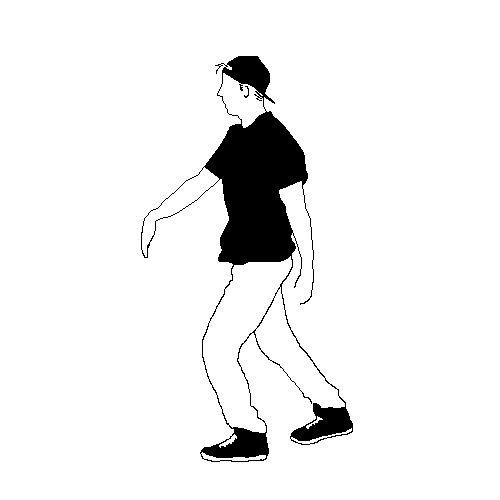

<!DOCTYPE html>
<html lang="es">
<head>
    <meta charset="UTF-8">
    <meta name="viewport" content="width=device-width, initial-scale=1.0">
    <title>Secuencia de GIFs con Pausa</title>
    <style>
        .gif-container {
            position: relative;
            width: 50%;
            height: 50vh;
        }
        .gif {
            position: absolute;
            top: 0;
            left: 0;
            height: 100%;
            opacity: 0;
            transition: opacity 1s ease-in-out;
        }
        .gif.active {
            opacity: 1;
        }
    </style>
</head>
<body>
    <div class="gif-container">
          
        
        
        
        
        
        
        
   <!--     
        
        
        -->
        <!-- Añade más GIFs según sea necesario -->
    </div>

    <script>
        const gifs = document.querySelectorAll('.gif');
        let currentIndex = 0;

        function showNextGif() {
            // Oculta el GIF actual
            gifs[currentIndex].classList.remove('active');

            // Avanza al siguiente GIF
            currentIndex = (currentIndex + 1) % gifs.length;

            // Espera 20 segundos antes de mostrar el siguiente GIF
            setTimeout(() => {
                // Muestra el siguiente GIF
                gifs[currentIndex].classList.add('active');

                // Programa la próxima transición después de 6 segundos de visualización
                setTimeout(showNextGif, 2000); // 6000 ms = 6 segundos de visualización
            }, 40000); // 20000 ms = 20 segundos de pausa
        }

        // Muestra el primer GIF inmediatamente
        gifs[currentIndex].classList.add('active');

        // Inicia la secuencia después de 6 segundos de visualización del primer GIF
        setTimeout(showNextGif, 2000); // 6000 ms = 6 segundos
    </script>
</body>
</html>
